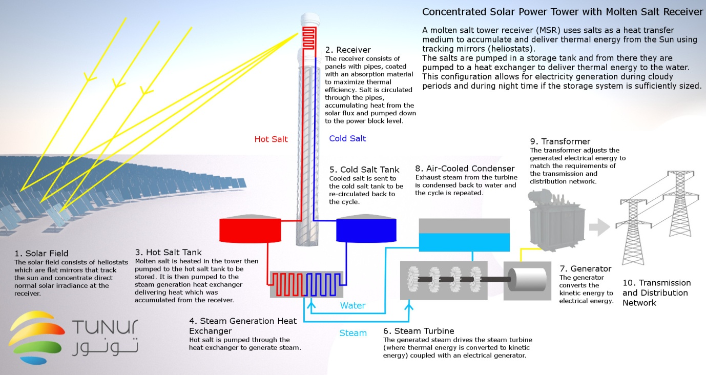

everlasting intelligence
1, language
our natural lifetime is more or less enough for experiencing life as an individual
besides, we are not our memories, so why bother making them immortal
considering the horrible things that some mortals have done in human history,
maybe mortality of human beings isn't a bad thing after all,
at least until they evolve enough
maybe in the future there would be some way to extend human lifetime
also there is the possibility of strong artificial intelligence
regardless, important thoughts can always be recorded, and every generation can study it and improve it
we may loose our body and personal memories, but our more important thoughts can live for a long time,
as a collective entity called human knowledge
taxonomic language
the first consonant of a word indicates the most general concept group, the word belongs to
the subsequent letters are enumerated, to produce the derived words,
in a way that different words are distinguishable even in noisy environment
the initial vowel of a word determines its part of speech in the sentence
words begin and end in a vowel, this makes word boundaries clear, even when speaking fast
compound words are made by gluing derived words (without initial and final vowels) together
basic concepts:
group, part, truth, negation, numbers, space, time, matter (organic and inorganic), radiation, motion (change)
consonants: (c=ch, x=sh)
, p, b, f, v, m
, t, d, s, z, l, n, r
, c, j, x, y
, k, g, h
vowels: a , e, i, o, u (rule)
"a" is usually pronounced as in "car", but alternatively it can be pronounced as in "bad", if it's easier
"aa" can be used to explicitly write the alternative pronunciation
prepositions are like additional arguments for a verb (ie other than the direct object):
in, on. o, under, towards, before, of, for
verbs are timeless, time is indicated using propositional phrases
conjunctions (or, and, if, then, but, however) connect:
, words or phrases
, dependent clauses
, sentences
subject + verb + adverb + object
the initial vowel of a word determines its part of speech:
, "o": nouns
, "u": proper nouns
, "a": verbs
, "e" or "i": adjectives and adverbs
multiple modifiers (adjectives or adverbs) can apply to the same noun or verb,
if they are separated by a conjunction, usually "and"
when one modifier immediately follows another of the same type, it modifies the former
the two together then cumulatively modify the noun or verb headword
cardinal and ordinal number of a noun is treated as adjectives
to make gerund from a verb, just replace initial "a" with "o"
to make passive voice from a verb, replace initial "a" with "e" or "i"
a sequence of nouns must be separated with commas or conjunctions
noun + noun:
, possession
, if the first noun is a gerund, the second noun is its object
there are 6 pronouns
interrogative pronouns: who, what, when, where, why, how
a numbers is one word which begins with the consonant+vowel representing the multiplicity concept,
followed by consonant+vowels representing the digits, separated with thousand, million ...
2, biological intelligence
artificial intelligence eliminates a lot of complexities required for sustaining biological intelligence
https://en.wikipedia.org/wiki/Cognitive_science
https://en.wikipedia.org/wiki/Cognitive_model#Dynamical_systems
but at least for centuries to come, the existence of intelligence will depend on survival of humans
our basic biological needs are:
, air ie oxygen plus nitrogen and/or helium (to adjust its density), with suitable temperature and pressure
, water ie H2O plus some minerals (to adjust the pH)
, nutrients:
1, amino acids: Sodium L'Aspartate (6.40 g), L'Tryptophan (0.75 g),
L'Threonine (2.42 g), L'Isoleucine (2.42 g), L'Proline (10.33 g), L'Valine (2.67 g),
Glycine (1.67 g), L'Phenylalanine (1.75 g), L'Serine (5.33 g), L'Leucine (3.83 g),
L'Methionine (1.75 g), L'Glutamine (9.07 g), L'Alanine (2.58 g),
L'Arginine HCl (2.58 g), L'Tyrosine Ethyl Ester HCl (6.83 g), L'Lysine HCl (3.58 g),
L'Histidine HCl H2O (1.58 g), L'Cysteine Ethyl Ester HCl (0.92 g)
2, water soluble vitamins: vitamin C (62.50 mg), Inositol (0.83 mg), Niacinamide (10.00 mg),
P'Aminobenzoic acid (416.56 mg), folic acid (1.67 mg), Pyridoxine HCl (1.67 mg), Thiamine HCl (1.00 mg),
D'Biotin (0.83 mg), Riboflavin (1.50 mg), Cyanocobalamin (1.67 mg),
D'Calcium pantothenate (8.33 mg), Choline bitartrate (231.25 mg)
3, salts: Manganous acetate (18.30 mg), Ammonium molybdate tetrahydrate (5.23 g), Sodium benzoate (1.00 g),
Zinc benzoate (2.82 mg), Cupric acetate (2.50 mg), Ferrous gluconate (0.83 g),
Sodium glycerophosphate (1.67 mg), Calcium chloride dihydrate (2.44 g),
Sodium chloride (4.77 g), Potassium iodide (0.25 mg), Potassium hydroxide (0.83 g), Magnesium oxide (0.38 g)
4, carbohydrates: Glucose (555.0 g), Glucono D'Lactone (17.2 g)
5, fats and fat soluble vitamins: vitamin A (3.64 mg), vitamin D (0.057 mg), Menadione (4.58 mg),
Ethyl linoleate (2.0 g) A'Tocopherol acetate (57.29 mg)
6, maybe other things like fiber, which are not nutrients, but are good for digestive system
naturally the environment we evolved in, supplies our basic needs
but in general, it's unstable, slow and insufficient (considering the current population and standards of life)
thus we have to build machines which can do it faster and in larger amounts
future society
in a prosperous society:
, no one's health is threatened by the lack of
clean water, healthy food, shelter, sanitation, or medical services
, proper education (based on science, and free of any kind of ideology) is available for every body
, the more one's work benefits society, the more rich one will be
(ie exactly the opposite of what is happening now, in most parts of the world)
computers can help people to easily access and improve human knowledge,
and as a result do things to improve the quality of human life
this is what education is all about, or at least it must be
children can learn simple skills useful in everyday life
adolescents can learn more advanced skills, useful for constructing and developing advanced technologies
society is made of groups with different specialties, each group can choose their leaders
election can in fact be a simple, cheap, dynamic, and completely reliable process
the only thing we need to completely trust the result of an election,
is to release the final result in a table
every one can see if her vote is entered correctly or not
since the total number of voters is known, there is no place for cheating
votes are submitted based on anonymous code which only its owner knows of its correspondence with his name
this method is so simple and cheap that can be easily done in short periods (every month or every 3 months)
actually people can vote any time they want, the result table will be updated continuously
but the election will be made in discrete periods
now compare this simple method with what we call democracy nowadays
this clearly shows us how the ones in power, play with people, and treat them like fools
beyond earth
to spread humans beyond earth we need a gigantic craft powered by nuclear energy, equipped with ion thrusters,
containing enough amounts of necessary elements for air, water and food, and machines to recycle them
also there must be machines for mining elements from planets,
including enough propeller matter to leave planets and navigate through space
the craft can use the relative movement and gravity of planets, to accelerate and decelerate
(gravitational slingshot, gravity assist)
each segment is equipped with its own thruster
during taking off most of its volume is used for propeller matter
in the space this segments connect together as shown in the figure,
and by rotational motion they provide artificial gravity
each segment must have a mass equal to the segment at the opposite side
(i think fluids can be used to compensate small mass inequalities)
in the end we would have two separated regions, unless of course they form a complete cylinder
3, everlasting energy
i think energy is the second major problem of humankind (the first is our ego)
it seems that there is only one source of energy which is inexhaustible, the nucleus of abundant elements
Sun
we live because of the Sun, and because we are far enough from it
but this also means that the energy is dispersed on earth and to harness it we need a lot of space
solar power tower is a good method to do it

additionally we can use natural cyclic systems powered by the Sun:
, water cycle, which its use is almost saturated
, high altitude wind, like Magenn air rotor system
energy storage
we can store energy in the electron arrangement of special materials
they are called batteries or fuels, if the released energy is electricity or heat, respectively
fossil fuels are how nature stores energy, they have very good energy densities,
but burning them pollutes air, and their natural resources will eventually expire
biofuel is a ridiculous and at the same time a sad lie
it leads to more hunger, and it is the most inefficient way to harness the energy of the Sun
nuclear energy
everlasting intelligence requires everlasting energy
so we need to harness nuclear energy directly
currently the most common way to harness nuclear energy is
by splitting a heavy nucleus apart (a process called fission),
which in addition to not being an abundant energy source,
is in general a very dirty process, producing high'level nuclear waste
though maybe new generation reactors can solve these problems (partially at least)
fusion: